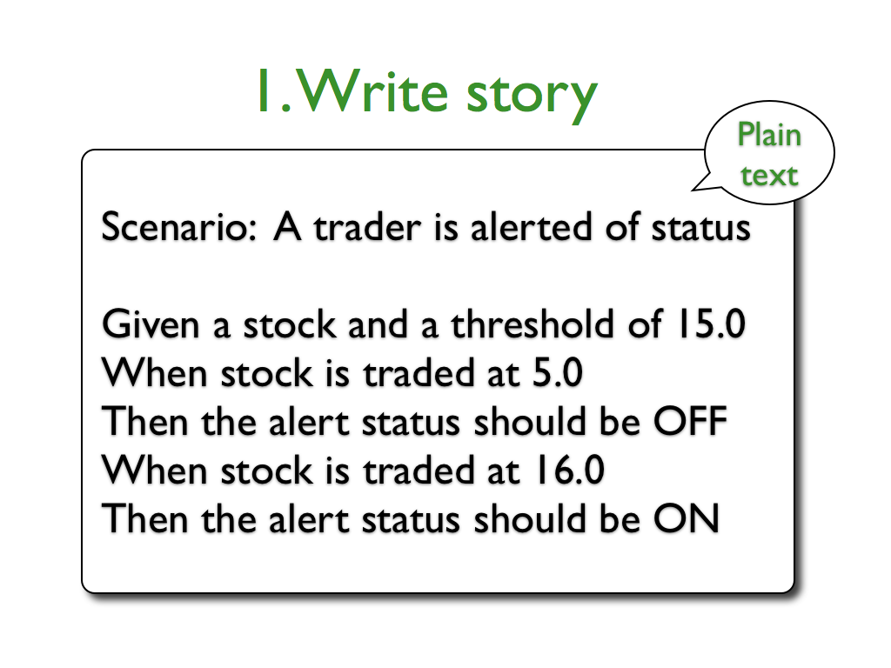
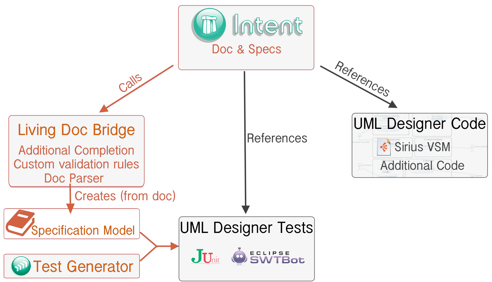

Living Documentation
Alex Lagarde, Mélanie Bats / Obeo
The reality
Write once...and never look at again
- Writing documentation = loosing my time
- Updating documentation = boring task

The theory
Continue to evolve to get a consistent documentation
Our expectation
Single source of truth to share the understanding

We are testing
Developpers are used to write unit tests but...

Everyone should participate
Testing is not only matter of developpers
Change focus
Turn computer-focused tests
into human-focused documentation

Inspiration
Acceptance testing
BDD
Executable specification
Specification by example
Persona
BDD
Feature
Story
Scenario (Gherkin)
Scenario: Forgot password
Given a user with email "cukes@cukes.info" exists
When I ask for a password reset
Then an email with a password reset link should be sent
Living documentation
Keep doc, code & tests up-to-date
Had a look on...
Cucumber = the most used BDD framework
Had a look on...
JBehave = adapted for java

Gave a try to...
Jnario = well integrated to Eclipse

Why yet another solution ?
- Not accessible to Functional users
- Generate code from test specifications
- Link specs with other artifacts
- Know when documentation or tests should be updated
Mylyn Intent: keep doc synchronized
- A documentation environment
- synchronized with artifacts
- customizable for your processes
- Part of Mylyn docs since Juno
One Single Intent Document
- Pure documentation zones
- Formal links zones
This chapter specifies the software behavior by listing relevant scenarios.
Section Scenario 01: Filtering Offers {
When I select the "Books" in the Category Page, I should only see the offers associated to this _category_.
@ref "my.test.project/src/my/test/project/Scenario01Test.java"
M@
}
}Pure documentation zones
- Explanations in Natural language
- Use the Textile syntax
This chapter specifies the software behavior by listing relevant scenarios.
Section Scenario 01: Filtering Offers {
When I select the "Books" in the Category Page, I should only see the offers associated to this _category_.
@ref "my.test.project/src/my/test/project/Scenario01Test.java"
M@
}
}Formal links zones
- Reference to technical artifacts (Java, model...)
- Extensible behavior (display, hyperlinks, validation...)
This chapter specifies the software behavior by listing relevant scenarios.
Section Scenario 01: Filtering Offers {
When I select the "Books" in the Category Page, I should only see the offers associated to this _category_.
@ref "my.test.project/src/my/test/project/Scenario01Test.java"
M@
}
}Living documentation toolchain
Living documentation toolchain
Living documentation toolchain

Living documentation toolchain
Living documentation toolchain
Living documentation toolchain
Living documentation toolchain
Living Doc in Action : Environment
- Eclipse Kepler SR1
- Mylyn Intent 0.9
- Living Doc bridge for Intent
- A "magic filler" plugin (because I'm lazy)

Living Doc in Action : Scenario
- Specify the features, stories and scenarios
- Link the specifications with:
- the Java tests
- the Sirius specification model
- Generate test code
- Iterate by updating code, specification or tests
Doc edition
Mylyn Intent
- Loading off your brain (only see doc you need)
- Customizable
- Textile syntax (completion)
→ Let's specify a new feature for UML Designer
Defining Scenarios
Living doc bridge
- Simple syntax for executable specs (Gherkin)
- Additional completion
Toward executable scenarios
Living doc bridge
- creates links from doc to tests (warning if not exist)
- parse a Specification model out of documentation
→ Let's generate the tests from Spec model
Cross-linked documentation
Mylyn Intent
- Hyperlinks to navigate from doc to code
- Quick-outline to retrieve doc parts related to an artifact
→ Let's take a look at the warning
Advanced validation
Living doc bridge
- Custom validation rules
- Custom quick-fixes
→ Let's link new elements
Live and not let die
- Drag and drop artifacts inside doc
If UML Designer Code changes
If UML Designer Tests change
If specifications change
Live and not let die
- Drag and drop artifacts inside doc
- Deciding when to update the doc is up to you
- Extensible synchronization
- Modify the Sirius specification model → update specs or rollback
Live and not let die
- Drag and drop artifacts inside doc
- Deciding when to update the doc is up to you
- Extensible synchronization
- Modify the Sirius specification model → update specs or rollback
- Modify a Java test → update specs or rollback
Live and not let die
- Drag and drop artifacts inside doc
- Deciding when to update the doc is up to you
- Extensible synchronization
- Modify the Sirius specification model → update specs or rollback
- Modify a Java test → update specs or rollback
- Modify the specifications → update tests or rollback
What's cooking?
Project management diagram

What's cooking?
What's documented?
What's cooking?
What's tested?
What's cooking?
What's outdated?
What's cooking?
- Stabilisation & performances
- Build integration (fail when outdated, export doc)
- New synchronization bridges (Bug tracker, Manifest.MF...)
Remember : Living doc, it's alive!
- Everybody can participate to tests
- Doc up-to-date with concrete world
- Customizable to your needs
Disclaimer
Only one (especially crappy) book was harmed during the preparation of this talk
Thanks!

wiki.eclipse.org/Intent
@Intent_Project
@melaniebats
@alex_lagarde
Don't forget to give feedback 
Don't miss Sirius talks
- Tuesday
- 15:00 - Sirius role-playing game: Build diagram, table and tree editors in 20 minutes!
- Wednesday
- 10:30 - EcoreTools 2.0: The Luna revival
- 18:00 - BOF : Let's get Sirius
- Thursday
- 11:00 - Uses Cases of PolarSys technologies for Architects
- 11:45 - Arcadia / Melody
- 14:15 - Arduino programming platform for kids
- At any time: ask us !